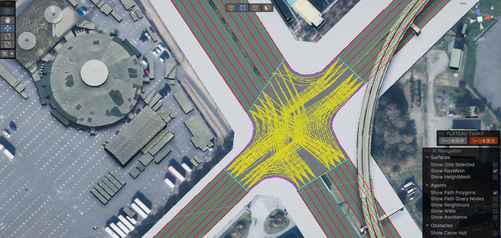

セットアップの手順
本書では、ツールのセットアップ手順について記載しています。
Unityのダウンロードとインストール
- Unity Hub をこちらからインストールします。
- Unity Hub とは、Unityのお好きなバージョンをインストールして起動することのできるソフトウェアです。
- Unity Hubを起動し、左のサイドバーからインストール → 右上のボタンからエディターをインストール をクリックします。

Unity 2022.3 で始まるバージョンを選択し、インストールを押します。

Unityプロジェクトを作成
Unity Hub を起動します。
左サイドバーの プロジェクト を押し、右上の 新しいプロジェクト ボタンをクリックします。

新しいプロジェクトの設定画面で、次のように設定します。
- 画面上部の
エディターバージョンを2022.3で始まる番号にします。 - 画面中部の
テンプレートはHigh Definitaion 3Dを選択します。 - 画面右下のプロジェクト名をお好みのものに設定します。
プロジェクトを作成ボタンを押します。

ツールをUnityにインポート
- 作成したプロジェクトをクリックすると、Unityが起動します。
- Unityが起動したら、以下の各ツールのリリースページからtgzファイルをダウンロードします。
Note
git指定で導入する方法は以下を参考にしてください。
SDKの使い方:GitのURL指定で導入する方法
- ダウンロードできたら、Unityのメニューバーから
Window→Package Managerを選択します。 - Package Manager ウィンドウの左上の
＋ボタンからAdd pacakge from tarball...を選択します。

- 先ほどダウンロードした 各ツールの tgz ファイルを指定します。するとウィンドウのパッケージ一覧に各ツール名が表示されます。

- 全てのツールを導入したら、Package Manager ウィンドウを閉じます。
道路ネットワークの準備

PLATEAU SDK for Unityにてシミュレーション対象エリアの都市モデルをインポートします。
PLATEAU SDK for Unityにて道路ネットワークを生成し、車線数や一方通行など実際の道路に即したネットワークへ編集します。
シミュレーションデータの準備からシミュレーション開始まで
可視化までのデータの準備は大まかに下記のような流れで行う
IF001IF002IF003を利用して道路ネットワークを作成する（前項：道路ネットワークの準備）。- 交通集中発生点設定機能および 信号現示設定機能にて道路ネットワークと
IF004をもとにシミュレーション用道路ネットワークを生成する。 - データ出力機能にて
IF101IF102を出力する。 - 実地での観測結果やオープンデータをもとに
IF005IF006を作成する。 - 既存OD交通量推定機能および開発OD交通量推定機能にて
IF101IF005IF006をもとにIF103IF104を出力する。 - Avenue等の交通シミュレータにて
IF101IF102IF103IF104をもとにシミュレーションを行い、可視化用のIF007IF008を出力する - ランタイム環境（デバッグプレイ・スタンドアロンビルド）にて
IF007IF008を動的にロードし、シミュレーションを可視化する。
| ID | データ概要 | ファイル形式 | ファイル名*はファイル名不定 |
ファイル概要 |
|---|---|---|---|---|
| IF001 | 都市モデル地形データ | CityGML | *dem.gml |
都市モデル地形地形情報 |
| IF002 | 都市モデル道路データ | CityGML | *tran.gml |
都市モデル地形道路情報 |
| IF003 | 都市モデル建築物データ | CityGML | *bldg.gml |
都市モデル建築物情報 |
| IF004 | 信号現示データ | CSV | *警視庁_定義_yyyymm.csv*警視庁_制御_yyyymm.csv |
信号定義情報（オープンデータ） 信号制御情報（オープンデータ） |
| IF101 | シミュレーション用道路ネットワークデータ | GeoJSON | output_node.geojson output_link.geojson output_lane.geojson output_track.geojson output_zone.geojson |
交差点情報 道路情報 車線情報 交差点軌跡情報 ゾーン情報 |
| IF102 | シミュレーション用信号現示データ | GeoJSON | output_signalcontroler.geojson output_signallight.geojson output_signalstep.geojson |
信号制御器情報 信号灯火器情報 信号現示階梯情報 |
| IF005 | 断面交通量データ | CSV | IF105_lk.csv | 断面交通量情報 |
| IF006 | 交差点交通量データ | CSV | IF106_crs.csv | 交差点交通量情報 |
| IF103 | 既存OD交通量データ | CSV | IF103_estgnr.csv | 既存OD交通量情報 |
| IF104 | 開発OD交通量データ | CSV | IF104_dev.csv | 開発OD交通量情報 |
| IF007 | 車両位置情報データ | CSV | *IF007_vpos.csv |
車の時系列位置情報 |
| IF008 | 道路指標値データ | CSV | *IF008_Indactor.csv |
渋滞の時系列指標値情報 |